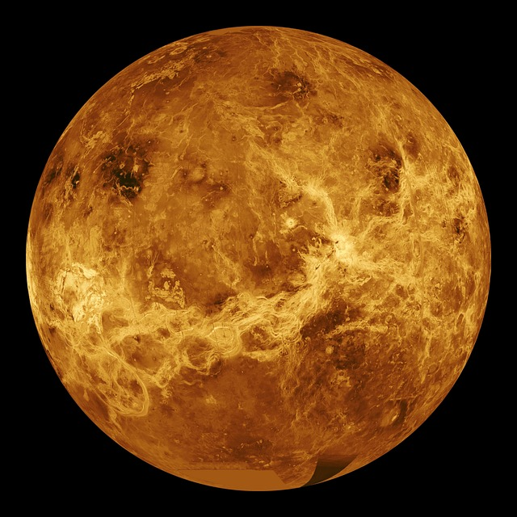
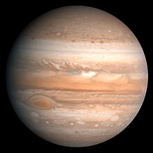
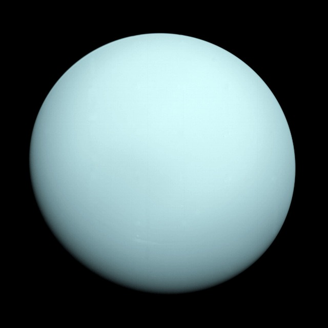
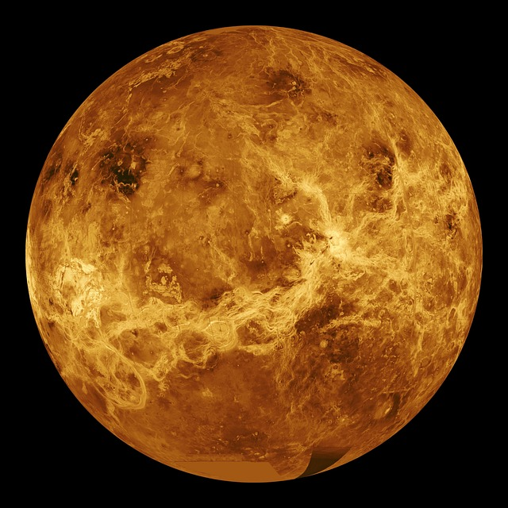
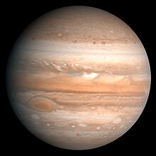
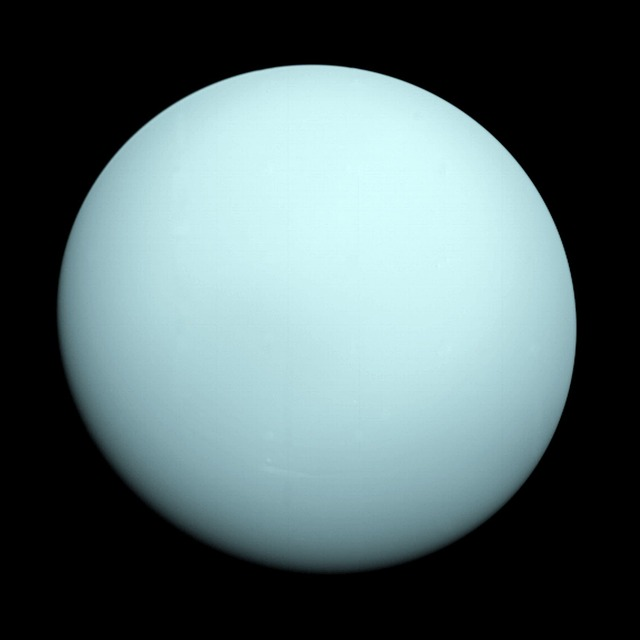

Planets of the Solar System







| Inner Planets | Name | Rotation | Revolution | Diameter (in km) | Atmosphere | Average Temperature (in Celsius) | # of Moons |
|---|---|---|---|---|---|---|---|
| Mercury
|
58.7 days | 88 days | 4878 km | N/A | 167° C | 0 | |
| Venus
 |
234 days | 225 days | 12104 km | 96.5% CO2, 3.5% N2 | 464° C | 0 | |
| Earth
|
24 hours | 365 days | 12756 km | 77% N, 21% O | 15° C | 1 | |
| Mars
|
24.7 hours | 667 days | 6805 km | 95% CO2 | -23° C | 2 | |
| Asteroid Belt | |||||||
| Outer Planets | Jupiter
 |
9.8 hours | 11.9 years | 142,984 km | 90% H, 10% He | -121° C | 95 |
| Saturn
|
10.6 hours | 29.5 years | 120,536 km | 96% H, 3% He | -168° C | 62 | |
| Uranus
 |
17.9 hours | 84 years | 51,118 km | 83% H, 15% He, and 2% CH4 | -193° C | 27 | |
| Neptune
|
24 hours | 365 years | 49,528 km | 85% H, 13% He, and 2% CH4 | -193° C | 8 | |